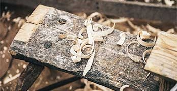

Die Lieferung Ihrer Möbel erfolgt bequem bis in die Wohnung an die gewünschte Stelle inkl. Verpackungsentsorgung.
Die professionelle Montage Ihrer neuen Möbel erledigen wir auf Wunsch gerne für Sie gleich bei der Lieferung.
Durch unseren Direktvertrieb sparen wir die Kosten des klassischen Handels ein. Sie erhalten ein 5-Sterne-Bett zu einem 3-Sterne-Preis. Wir bieten sowohl den gebührenfreien Raten- als auch Rechnungskauf an.
Wir sind von der Qualität unseres Boxspringbetts und der JUSTyou24 Matratze überzeugt. Daher bieten wir Ihnen gerne eine 3-jährige Garantie an.
Die ELESS TFK-Materatzen verwenden schwedischen STARSPRINGS®-Federn, die sich in separaten Vliesstoff-Taschen befinden. Sie sind nicht miteinander verbunden, so dass jede Feder unabhängig von den anderen funktioniert. STARSPRINGS sind bekannte Stahlfederspezialisten aus Schweden, deren Federn sich durch eine lange Lebensdauer auszeichnen.
Eine stabile Konstruktion Ihres ELLES Boxspringbetts bildet ein solider Massivholzrahmen, der mit einem Federkern gefüllt ist. Massivholz zeichnet sich durch hohe Festigkeit und Formstabilität aus und aus diesem Grund kommt bei der Fertigung des Boxspringbetts sehr oft zur Anwendung. Da wir auf hochwertige Materialien Wert legen, wird hier kein Spanplatte-Bettrahmen verwendet.
Das ELLES Boxspringbett unterscheidet sich von herkömmlichen Betten durch optimale Belüftungseigenschaften. Für das optimale Bettklima sorgen sowohl ein luftdurchlässiger Aufbau des Bettgestells als auch atmungsaktive ELLES Matratzen und ELLES Topper. Hierdurch wird die Luftfeuchtigkeit erheblich abgesenkt. Der Schlaf wird besser und die Materialien werden geschont.
ELESS Matratzen sind so individuell wie unsere Kunden, unterscheiden sich in Konstruktion, Materialien sowie Eigenschaften und werden perfekt auf Ihre Bedürfnisse abgestimmt. Über unserem Konfigurator wählen Sie die für Sie richtige Matratze aus. Wir verwenden ausschließlich hochwertige schwedische STARSPRINGS®-Federn in drei Ausführungen.
Von kuschelweichem Velours, Webstoff bis zum strapazierfähigen Kunstleder – jeder findet etwas für sich gemäß Ihren optischen Vorlieben. Die robusten Materialien verleihen Ihrem ELLES Boxspringbett ein stillvolles Design und auffallende Optik, sie zeichnen sich auch durch gute Strapazierfähigkeit aus und garantieren eine lange Lebensdauer.
ELESS Matratzen sind so individuell wie unsere Kunden, unterscheiden sich in Konstruktion, Materialien sowie Eigenschaften und werden perfekt auf Ihre Bedürfnisse abgestimmt. Über unserem Konfigurator wählen Sie die für Sie richtige Matratze aus. Wir verwenden ausschließlich hochwertige schwedische STARSPRINGS®-Federn in drei Ausführungen.
Das ELLES Boxspringbett unterscheidet sich von herkömmlichen Betten durch optimale Belüftungseigenschaften. Für das optimale Bettklima sorgen sowohl ein luftdurchlässiger Aufbau des Bettgestells als auch atmungsaktive ELLES Matratzen und ELLES Topper. Hierdurch wird die Luftfeuchtigkeit erheblich abgesenkt. Der Schlaf wird besser und die Materialien werden geschont.
Die ELESS TFK-Materatzen verwenden schwedischen STARSPRINGS®-Federn, die sich in separaten Vliesstoff-Taschen befinden. Sie sind nicht miteinander verbunden, so dass jede Feder unabhängig von den anderen funktioniert. STARSPRINGS sind bekannte Stahlfederspezialisten aus Schweden, deren Federn sich durch eine lange Lebensdauer auszeichnen.
Jedes ELLES Boxspringbett, von Füßen bis zum Kopfteil, erfordert viele Stunden handwerklicher Arbeit, Design und Entwicklung. Die einzelnen Elemente erfüllen viele individuelle Aufgaben, die den perfekten Schlaf in einem ELLES Boxspringbett garantieren. Jedes Element wird von Hand gefertigt!
Wir legen Wert auf gute Qualität, deswegen verwenden wir nur hochwertige Materialien. Wir verbinden traditionelle Handwerkskunst mit moderner Technologie und auf diese Art und Weise stellen wir Ihnen hochqualitative Produkte zur Verfügung, die sogar den anspruchsvollsten Kunden zufrieden stellen.
Bei der Entwicklung unseres Boxspringbetts haben wir uns bewusst viel Zeit genommen. Wir haben uns gefragt, was uns an den meisten Boxspringbetten stört und unzählige Modelle getestet und probegelegen. Wir haben Stärken und Schwächen analysiert, um auf Basis dieser Erkenntnisse und mit Hilfe vieler Testversionen ELESS Boxsprings zu entworfen. Ein Boxspringbett ohne Kompromisse.